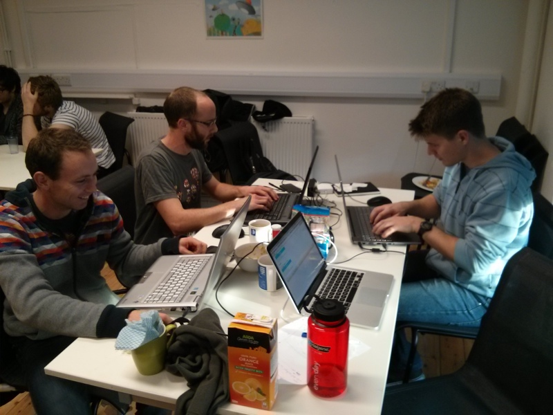

MATT THOMPSON
Global game jam 2014: Bristol Edition
Tue Feb 4th 2014
This year I took part in my first ever game jam. Overall, I would totally recommend the experience as a great way to make new friends and improve your programming chops. I would not recommend it as a way to relax and wind down, though. If you’re like our team, you will find yourself drawn into a nightmarish frenzy of workaholic hackery.
The Global Game Jam is an event where people all over the world get into teams and make games over the course of 48 hours. The theme of the games is announced on the Friday night, and you then have until Sunday evening to put together an interesting game that matches the theme. This year’s theme was:
We don’t see things as they are, we see things as we are.
Or something to that effect. Needless to say, this was vague and cryptic enough to give the game jammers plenty of room for interpretation (or in our case, plenty of reason to make a game and come up with an ad-hoc explanation later).

Team Hot and Cheesy!
The event I went to was hosted at the Bristol Games Hub, a coworking space for game developers in Bristol’s trendy Stoke’s Croft district. The organisers added an extra emphasis on making our games accessible, something that we almost entirely failed to do.
The game is playable, in all its glory, here.